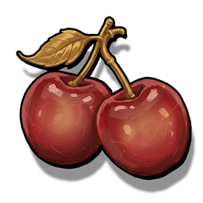
Provision
Paid automatically when you start a dungeon. Not used from the drawer.
Food that pays the dungeon entrance fee. Kept with your other currencies at home, not in a consumable slot.
What you carry
Pack consumables in your dungeon setup slots. Use them from the dungeon drawer. Relics sit on the relic bar and work on their own. Provision is not a drawer item — it is paid when you enter.
Pack them in your dungeon setup (up to your consumable slots). In a run they sit in the item drawer — open on the map, tucked to the side in a fight. Tap to use. Long-press to read the description. Potions are a separate drawer row and are not listed here. Provision is not packed in those slots.

Paid automatically when you start a dungeon. Not used from the drawer.
Food that pays the dungeon entrance fee. Kept with your other currencies at home, not in a consumable slot.
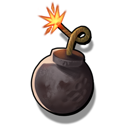
Tap in the drawer only while you are in a wall room or at Excavation. Cannot be used in a fight.
In a wall room it opens the wall so you can pass. At Excavation it blows the mound and you receive equipment. You can also tap the wall or the mound in those rooms — that spends a bomb if you have one. In a wall room, holding on the wall opens it without a bomb and you take damage. At Excavation, if you have no bomb you can watch one ad per dungeon to blow the mound once.
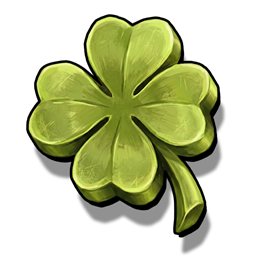
Tap in the drawer on the map, or during your action in a fight. Lasts until the dungeon ends. Each use stacks with your other luck.
Raises the chance that a roll gives something instead of nothing: monster loot, dungeon chests, and post-fight power-up choices. Also makes the exit portal minigame more likely to appear. It does not change the mix of rarities among the items that do drop.
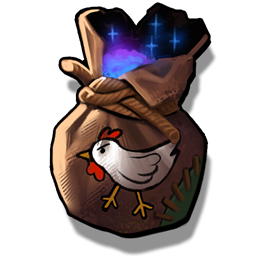
Tap in the drawer during a normal fight. Does not work in a boss fight, and does not work on the map.
Ends the fight so the doors open and you can leave. You still collect loot from enemies already dead. You do not get a post-fight power-up from that fight.
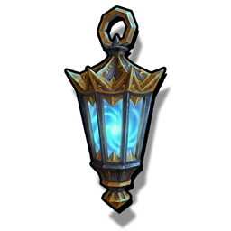
Tap in the drawer on the map after the current room is finished. Cannot be used in a fight.
Shows the room type ahead, behind, left and right: fight, treasure, event, empty, boss or trap. The overlay closes when you move, or after a short time.
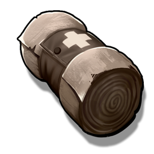
Tap in the drawer on the map, or during your action in a fight.
Removes Bleed from you. It does not heal life and does not clear other debuffs.
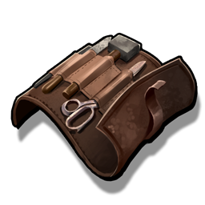
Tap in the drawer on the map, or during your action in a fight.
Picks one random equipped item that is fully broken and restores it to barely working (one durability left). If nothing equipped is fully broken, nothing is repaired.
Equip up to your relic slots in home setup. In the dungeon they sit on the relic bar. Long-press to read them — you do not tap them to activate. Pieces of the same relic can be assembled at home. Some relics can also appear as a post-fight power-up.
Works by itself in a fight.
Lets you tap your deck, discard and burn piles to look through the cards in them. Tapping one pile closes the others.
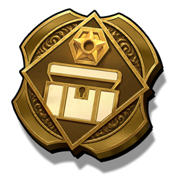
Works when a dungeon chest gives regular coins.
Adds extra coins on top of the chest coin pile. Does not change coins dropped by monsters. Stacks with Treasure Hunter.
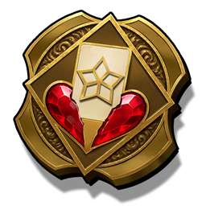
Hurts you at the start of every fight. Extra draw lasts for that fight, then is applied again on the next one.
You lose a little life when the fight starts. You draw one extra card each turn.
Works at the start of your turn, after leftover shields are cleared (unless you have Keep Defense).
Gives you Physical and Magical shield based on your max life.
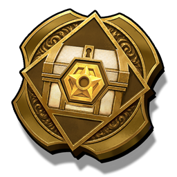
Works when a dungeon chest gives regular coins.
Adds extra coins on top of the chest coin pile. Does not change coins dropped by monsters. Stacks with Extra Cash.
Works when you die in a fight. Quitting does not trigger it.
Heals you for 1 life and then the relic is gone, so it can save you once. If a heal-block (such as Sickness) stops that heal, you still die.
Applied when the dungeon loads, and again at the start of every fight (fight-only stats reset between fights).
You draw one less card each turn, and you gain one extra movement. Can be worn with Yang.
Applied when the dungeon loads, and again at the start of every fight (fight-only stats reset between fights).
You draw one extra card each turn, and you lose one movement. Can be worn with Yin.
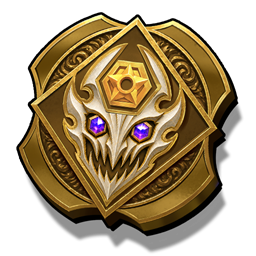
Works when a monster drop includes regular coins.
Increases those coin amounts. Does not change coins from chests, and does not change other loot.
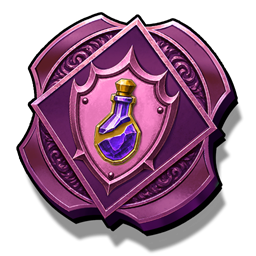
Can appear as a post-fight power-up. Works at the start of your turn.
Gives you Physical and Magical shield based on your max life (at least 1). That shield is removed at the end of your turn. Your potion slots stay locked for the rest of the dungeon.
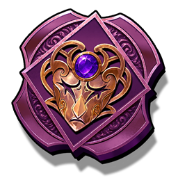
Can appear as a post-fight power-up. Works at the start of your turn.
Picks a random combat debuff and applies a few stacks of it. Half the time it hits you. The other half it hits every living enemy.
No item matches that search.